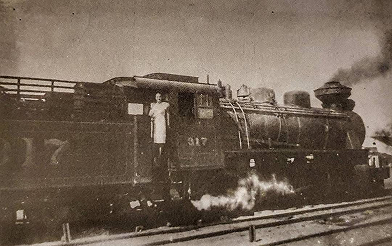
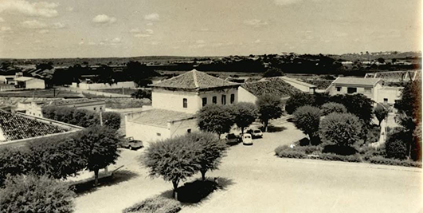
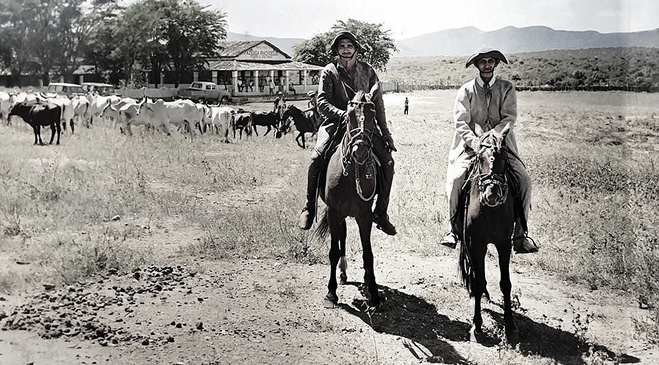
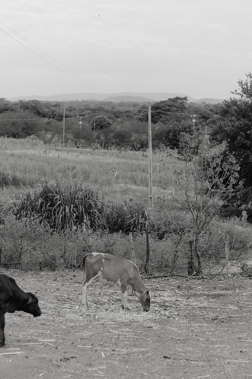
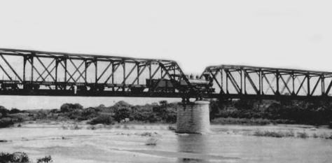
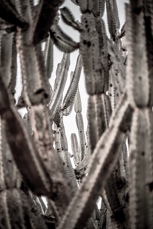

"A criatividade, a coragem e a vitalidade apesar do isolamento, formaram o conjunto da obra onde me envaidece e emociona quando penso em meus ancestrais é suas vidas naquela paisagem única"
"Parte da paisagem do meu sertão aqui no norte do país, onde aprendemos a segurar água que chega e vai embora, é habitada também por pedras gigantes e ainda silenciosas levemente acariciadas pelo canto de pássaros persistentes."
"Suas sombras são contornadas por bosques de ipê, mandacaru, pau branco, juazeiros, carnaúbas, frutas cheias d'água, rios de areia e riachos secos. Todo esse arranjo ambiental curioso e aparentemente contraditório se harmoniza sob o céu permanentemente azul."